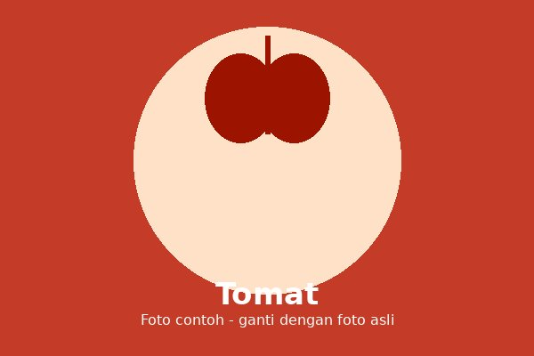

Tomat adalah tanaman yang buahnya berwarna merah saat matang. Buah ini banyak digunakan sebagai bahan masakan, sambal, hingga minuman.
Tomato is a plant whose fruit turns red when ripe. It is widely used as an ingredient in cooking, sambal, and drinks.
Tumbuh baik di dataran rendah hingga dataran tinggi dengan suhu sejuk dan tanah yang subur.
Grows well in lowland to highland areas with cool temperatures and fertile soil.